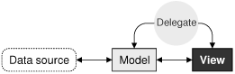
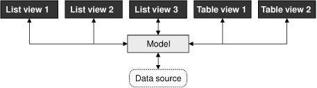
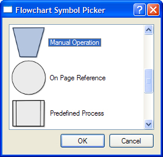
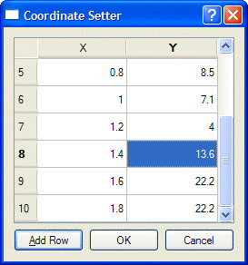
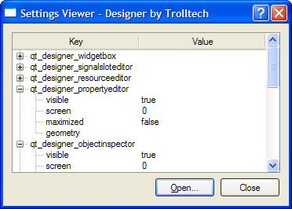

Many applications let the user search, view, and edit individual items that belong to a data set. The data might be held in files or accessed from a database or a network server. The standard approach to dealing with data sets such as this is to use Qt's item view classes.
In earlier versions of Qt, the item view widgets were populated with the entire contents of a data set; the users would perform all their searches and edits on the data held in the widget, and at some point the changes would be written back to the data source. Although simple to understand and use, this approach doesn't scale very well to large data sets and doesn't lend itself to situations where we want to display the same data set in two or more different widgets.
The Smalltalk language popularized a flexible approach to visualizing large data sets:model–view–controller (MVC). In the MVC approach, the model represents the data set and is responsible for both fetching the data that is needed for viewing and saving back any changes. Each type of data set has its own model, but the API that the models provide to the views is uniform regardless of the underlying data set. The view presents the data to the user. With any large data set only a limited amount of data will be visible at any one time, so that is the only data that the view asks for. The controller mediates between the user and the view, converting user actions into requests to navigate or edit data, which the view then transmits to the model as necessary.
Qt provides a model/view architecture inspired by the MVC approach, as Figure 10.1 illustrates. In Qt, the model behaves the same as it does for classic MVC. But instead of a controller, Qt uses a slightly different abstraction: the delegate. The delegate is used to provide fine control over how items are rendered and edited. Qt provides a default delegate for every type of view. This is sufficient for most applications, so we usually don't need to care about it.

Using Qt's model/view architecture, we can use models that fetch only the data that is actually needed for display in the view, making it possible to handle very large data sets without compromising performance. And by registering a model with two or more views, we can give the user the opportunity to view and interact with the data in different ways, with little overhead. Qt automatically keeps multiple views in sync, reflecting changes to one in all the others, as illustrated in Figure 10.2. An additional benefit of the model/view architecture is that if we decide to change how the underlying data set is stored, we just need to change the model; the views will continue to behave correctly.

In many situations, we need to present only relatively small numbers of items to the user. In these common cases, we can use Qt's convenience item view classes (QListWidget, QTableWidget, and QTreeWidget) and populate them with items directly. These classes behave in a similar way to the item view classes provided by earlier versions of Qt. They store their data in "items" (e.g., a QTableWidget contains QTableWidgetItems). Internally, the convenience classes use custom models that make the items visible to the views.
For large data sets, duplicating the data is often not an option. In these cases, we can use Qt's views (QListView, QTableView, and QTreeView) in conjunction with a data model, which can be a custom model or one of Qt's predefined models. For example, if the data set is held in a database, we can combine a QTableView with a QSqlTableModel.
Using Qt's item view convenience subclasses is usually simpler than defining a custom model and is appropriate when we don't need the benefits of separating the model and the view. We used this technique in Chapter 4 when we subclassed QTableWidget and QTableWidgetItem to implement spreadsheet functionality.
In this section, we will show how to use the convenience item view subclasses to display items. The first example shows a read-only QListWidget (Figure 10.3), the second example shows an editable QTableWidget (Figure 10.4), and the third example shows a read-only QTreeWidget (Figure 10.5).



We begin with a simple dialog that lets the user pick a flowchart symbol from a list. Each item consists of an icon, a text, and a unique ID.
Let's start with an extract from the dialog's header file:
class FlowChartSymbolPicker : public QDialog
{
Q_OBJECT
public:
FlowChartSymbolPicker(const QMap<int, QString> &symbolMap,
QWidget *parent = 0);
int selectedId() const { return id; }
void done(int result);
...
};When we construct the dialog, we must pass it a QMap<int, QString>, and after it has executed we can retrieve the chosen ID (or -1 if the user didn't select any item) by calling selectedId().
FlowChartSymbolPicker::FlowChartSymbolPicker(
const QMap<int, QString> &symbolMap, QWidget *parent)
: QDialog(parent)
{
id = -1;
listWidget = new QListWidget;
listWidget->setIconSize(QSize(60, 60));
QMapIterator<int, QString> i(symbolMap);
while (i.hasNext()) {
i.next();
QListWidgetItem *item = new QListWidgetItem(i.value(),
listWidget);
item->setIcon(iconForSymbol(i.value()));
item->setData(Qt::UserRole, i.key());
}
...
}We initialize id (the last selected ID) to -1. Next we construct a QListWidget, a convenience item view widget. We iterate over each item in the flowchart symbol map and create a QListWidgetItem to represent each one. The QListWidgetItem constructor takes a QString that represents the text to display, followed by the parent QListWidget.
Then we set the item's icon and we call setData() to store our arbitrary ID in the QListWidgetItem. The iconForSymbol() private function returns a QIcon for a given symbol name.
QListWidgetItems have several roles, each of which has an associated QVariant. The most common roles are Qt::DisplayRole, Qt::EditRole, and Qt::IconRole, and for these there are convenience setter and getter functions (setText(), setIcon()), but there are several other roles. We can also define custom roles by specifying a numeric value of Qt::UserRole or higher. In our example, we use Qt::UserRole to store each item's ID.
The omitted part of the constructor is concerned with creating the buttons, laying out the widgets, and setting the window's title.
void FlowChartSymbolPicker::done(int result)
{
id = -1;
if (result == QDialog::Accepted) {
QListWidgetItem *item = listWidget->currentItem();
if (item)
id = item->data(Qt::UserRole).toInt();
}
QDialog::done(result);
}The done() function is reimplemented from QDialog. It is called when the user clicks OK or Cancel. If the user clicked OK, we retrieve the relevant item and extract the ID using the data() function. If we were interested in the item's text, we could retrieve it by calling item->data(Qt::DisplayRole).toString() or, more conveniently, item->text().
By default, QListWidget is read-only. If we wanted the user to edit the items, we could set the view's edit triggers using QAbstractItemView::setEditTriggers(); for example, a setting of QAbstractItemView::AnyKeyPressed means that the user can begin editing an item just by starting to type. Alternatively, we could provide an Edit button (and perhaps Add and Delete buttons) and use signal–slot connections so that we can handle the editing operations programmatically.
Now that we have seen how to use a convenience item view class for viewing and selecting data, we will look at an example in which we can edit data. Again we are using a dialog, this time one that presents a set of (x, y) coordinates that the user can edit.
As with the previous example, we will focus on the item view relevant code, starting with the constructor.
CoordinateSetter::CoordinateSetter(QList<QPointF> *coords,
QWidget *parent)
: QDialog(parent)
{
coordinates = coords;
tableWidget = new QTableWidget(0, 2);
tableWidget->setHorizontalHeaderLabels(
QStringList() << tr("X") << tr("Y"));
for (int row = 0; row < coordinates->count(); ++row) {
QPointF point = coordinates->at(row);
addRow();
tableWidget->item(row, 0)->setText(QString::number(point.x()));
tableWidget->item(row, 1)->setText(QString::number(point.y()));
}
...
}The QTableWidget constructor takes the initial number of table rows and columns to display. Every item in a QTableWidget is represented by a QTableWidgetItem, including horizontal and vertical header items. The setHorizontalHeaderLabels() function sets the text for each horizontal table widget item to the corresponding text in the string list it is passed. By default, QTableWidget provides a vertical header with rows labeled from 1, which is exactly what we want, so we don't need to set the vertical header labels manually.
Once we have created the column labels, we iterate through the coordinate data that was passed in. For every (x, y) pair, we add a new row (using the private function addRow()) and set the text in each of the row's columns appropriately.
By default, QTableWidget allows editing. The user can edit any cell in the table by navigating to it and then either pressing F2 or simply by typing. All changes the user has made in the view will be automatically reflected into the QTableWidgetItems. To prevent editing, we can call setEditTriggers(QAbstractItemView::NoEditTriggers).
void CoordinateSetter::addRow()
{
int row = tableWidget->rowCount();
tableWidget->insertRow(row);
QTableWidgetItem *item0 = new QTableWidgetItem;
item0->setTextAlignment(Qt::AlignRight | Qt::AlignVCenter);
tableWidget->setItem(row, 0, item0);
QTableWidgetItem *item1 = new QTableWidgetItem;
item1->setTextAlignment(Qt::AlignRight | Qt::AlignVCenter);
tableWidget->setItem(row, 1, item1);
tableWidget->setCurrentItem(item0);
}The addRow() slot is invoked when the user clicks the Add Row button; it is also used in the constructor. We append a new row using QTableWidget::insertRow(). Then we create two QTableWidgetItems and add them to the table using QTableWidget::setItem(), which takes a row and a column in addition to the item. Finally, we set the current item so that the user can start editing the new row's first item.
void CoordinateSetter::done(int result)
{
if (result == QDialog::Accepted) {
coordinates->clear();
for (int row = 0; row < tableWidget->rowCount(); ++row) {
double x = tableWidget->item(row, 0)->text().toDouble();
double y = tableWidget->item(row, 1)->text().toDouble();
coordinates->append(QPointF(x, y));
}
}
QDialog::done(result);
}When the user clicks OK, we clear the coordinates that were passed in to the dialog, and create a new set based on the coordinates in the QTableWidget's items. For our third and final example of Qt's convenience item view widgets, we will look at some snippets from an application that shows Qt application settings using a QTreeWidget. Read-only is the default for QTreeWidget.
Here's an extract from the constructor:
SettingsViewer::SettingsViewer(QWidget *parent)
: QDialog(parent)
{
organization = "Trolltech";
application = "Designer";
treeWidget = new QTreeWidget;
treeWidget->setColumnCount(2);
treeWidget->setHeaderLabels(
QStringList() << tr("Key") << tr("Value"));
treeWidget->header()->setResizeMode(0, QHeaderView::Stretch);
treeWidget->header()->setResizeMode(1, QHeaderView::Stretch);
...
setWindowTitle(tr("Settings Viewer"));
readSettings();
}To access an application's settings, a QSettings object must be created with the organization's name and the application's name as parameters. We set default names ("Designer" by "Trolltech") and then construct a new QTreeWidget. The tree widget's header view governs the sizes of the tree's columns. We set both columns' resize mode to Stretch. This tells the header view to always make the columns fill the available space. In this mode, the columns cannot be resized by the user or programmatically. At the end of the constructor, we call the readSettings() function to populate the tree widget.
void SettingsViewer::readSettings()
{
QSettings settings(organization, application);
treeWidget->clear();
addChildSettings(settings, 0, "");
treeWidget->sortByColumn(0);
treeWidget->setFocus();
setWindowTitle(tr("Settings Viewer - %1 by %2")
.arg(application).arg(organization));
}Application settings are stored in a hierarchy of keys and values. The addChildSettings() private function takes a settings object, a parent QTreeWidgetItem, and the current "group". A group is the QSettings equivalent of a file system directory. The addChildSettings() function can call itself recursively to traverse an arbitrary tree structure. The initial call from the readSettings() function passes a null pointer as the parent item to represent the root.
void SettingsViewer::addChildSettings(QSettings &settings,
QTreeWidgetItem *parent, const QString &group)
{
if (!parent)
parent = treeWidget->invisibleRootItem();
QTreeWidgetItem *item;
settings.beginGroup(group);
foreach (QString key, settings.childKeys()) {
item = new QTreeWidgetItem(parent);
item->setText(0, key);
item->setText(1, settings.value(key).toString());
}
foreach (QString group, settings.childGroups()) {
item = new QTreeWidgetItem(parent);
item->setText(0, group);
addChildSettings(settings, item, group);
}
settings.endGroup();
}The addChildSettings() function is used to create all the QTreeWidgetItems. It iterates over all the keys at the current level in the settings hierarchy and creates one QTableWidgetItem per key. If a null pointer was passed as the parent item, we create the item as a child of QTreeWidget::invisibleRootItem(), making it a top-level item. The first column is set to the name of the key and the second column to the corresponding value.
Next, the function iterates over every group at the current level. For each group, a new QTreeWidgetItem is created with its first column set to the group's name. The function then calls itself recursively with the group item as the parent to populate the QTreeWidget with the group's child items.
The item view widgets shown in this section allow us to use a style of programming that is very similar to that used in earlier versions of Qt: reading an entire data set into an item view widget, using item objects to represent data elements, and (if the items are editable) writing back to the data source. In the following sections, we will go beyond this simple approach and take full advantage of Qt's model/view architecture.